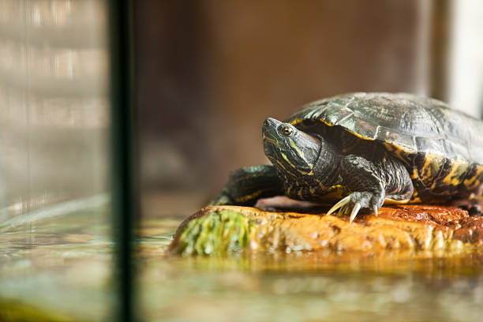
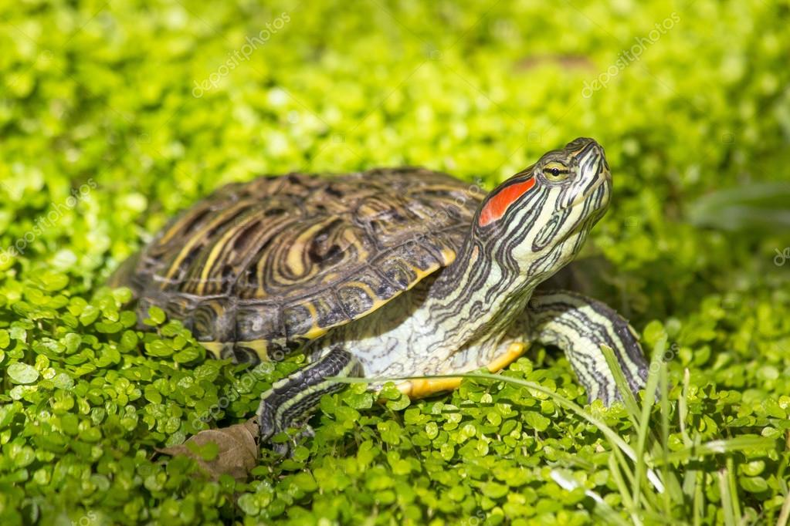
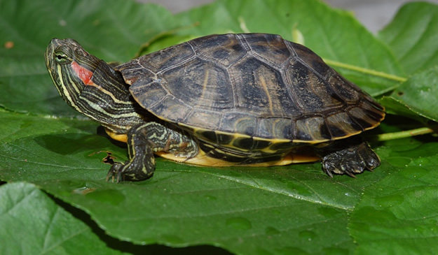

Características de la especie

Hábitat: Vive en agua dulce, saliendo a respirar y tomar sol fuera del agua. Se le puede construir un tortuguero ideal con una plataforma para descansar.
Esta especie disfruta de estanques, lagos y acuarios amplios con zonas secas donde pueda regular su temperatura corporal. Por otra parte, necesita aguapara comer, por lo que no puede vivir en espacios completamente secos.

Alimentación: Es omnívora, consume insectos, peces pequeños, vegetales y algas. Requiere de una alimentación rica en calcio para mantener en buen estado su caparazón. El alimento en pellet para tortugas es accesible y práctico, aunque también se recomienda complementar con vegetales frescos.
La tortuga de orejas rojas (Trachemys scripta elegans) no está considerada en peligro de extinción, pero es una especie invasora que representa una amenaza para la biodiversidad local en muchos ecosistemas.

Reproducción: La Tortuga de orejas rojas pone huevos cerca del agua, en la arena o sobre la vegetación. En cautiverio necesita una buena alimentación y temperaturas cálidas para la reproducción.
Durante su etapa juvenil crece rápidamente y requiere un ambiente limpio, seguro y con buena exposición a luz. Las tortugas que crecen en espacios contaminados, como alcantarillas, suelen tener muchas enfermedades y una baja probabilidad de sobrevivir.